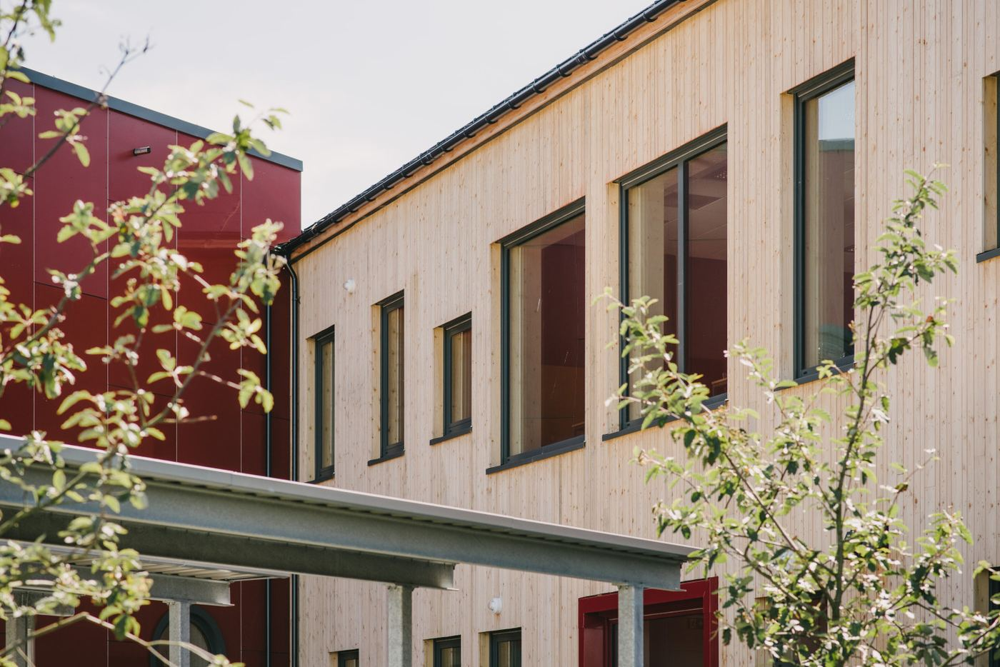

Arkitekter i Sandnes
Vi tegner steder, ikke bare bygg.
AROS arkitekter tror på mangfold, inkludering og samarbeid som drivkraften bak kreativitet og nyskapning. Vi skaper rom som fremkaller følelser, øker trivsel og beriker liv.
Prosjekter
Bygg vi har tegnet
Fra skoler og næringsbygg til boliger ved vannet. Hvert prosjekt er tegnet for stedet det står på.
Prosess
Fire faser, én fast kontakt
Vi følger deg tett gjennom hele prosessen, fra idéutvikling til ferdigstillelse.
Idéutvikling
Vi lytter, kartlegger behov og finner ut hva stedet og brukerne faktisk trenger.
Skisseprosjekt
Volum, planløsning og materialer prøves ut. Du ser forslagene før vi går videre.
Forprosjekt og søknad
Tekniske føringer, myndighetskrav og søknad om rammetillatelse.
Byggefase
Oppfølging på plass, detaljtegninger og befaringer til bygget står ferdig.
Vårt ståsted
Med kjærlighet for faget og dedikasjon til vårt arbeid skaper vi rom som er mer enn fysiske opplevelser – de er steder som fremkaller følelser, øker trivsel og beriker liv.AROS arkitekter

Har du et prosjekt i tankene?
AROS arkitekter står klare for å hjelpe deg med å realisere drømmeprosjektet – fra idé til ferdig bygg.